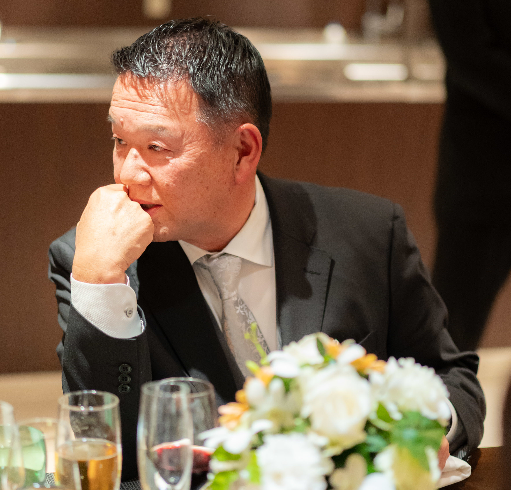

西田徹朗 (Tetsuro NISHIDA)
公益社団法人 日本プロゴルフ協会 (PGA) 理事
近畿地区プロゴルフ会 副会長
京都プロゴルフ会 会長
ベストゴルフクラブ 支配人兼ヘッドプロ
生年月日: 1962年8月12日
出身地: 京都
電話番号: 090-3166-0906
メール:
nishida.tetsuro@gmail.com
【略歴】
1962年京都府生まれ。
父親の勧めで10歳からゴルフを始める。
ジュニア選手権などで優勝8回。
高校時代にマスターズアマチュア選手権で優勝し、太平洋マスターズに出場。
21歳で日本プロゴルフ協会プロテストに合格。
その他、近畿オープン2位など。
教え子には園田絵理子プロなど。
現在は、日本プロゴルフ協会 (PGA) 理事、近畿地区プロゴルフ会副会長、京都プロゴルフ会会長、ベストゴルフクラブ支配人兼ヘッドプロを務める。
趣味は家族旅行とお寺参り。
ゴルフに関する資格
- 日本プロゴルフ協会 トーナメントプレイヤー
- 日本プロゴルフ協会 ティーチングプロ A級
- 日本スポーツ協会 ゴルフ教師
ゴルフに関するご相談・レッスン・スクールなど
初心者から経験者、ジュニアからシニア世代まで、一人一人の目標やプラン、ライフスタイルと相談させていただきながら、ゴルフをより楽しくプレイできるように指導いたします。(生徒さんの年齢は小学1年生から82歳までと幅広く、また40年間通っていただいてる方もいらっしゃいます)
現在は、下記の練習場にて、個別レッスンとスクールレッスン (複数人) を行っております。
レッスンに関する詳しい情報や、スイング・飛距離の伸ばし方・クラブ選び・ゴルフ場案内などなどに関するご質問は、お気軽に、下記連絡先までご連絡ください。
電話: 090-3166-0906
メール: nishida.tetsuro@gmail.com
練習場
- ベストコルフクラブ (綾部市)
- 桂ゴルフクラブ (西京区)
- アルバゴルフクラブ (亀岡市)
- インドアゴルフ京阪 (伏見区)